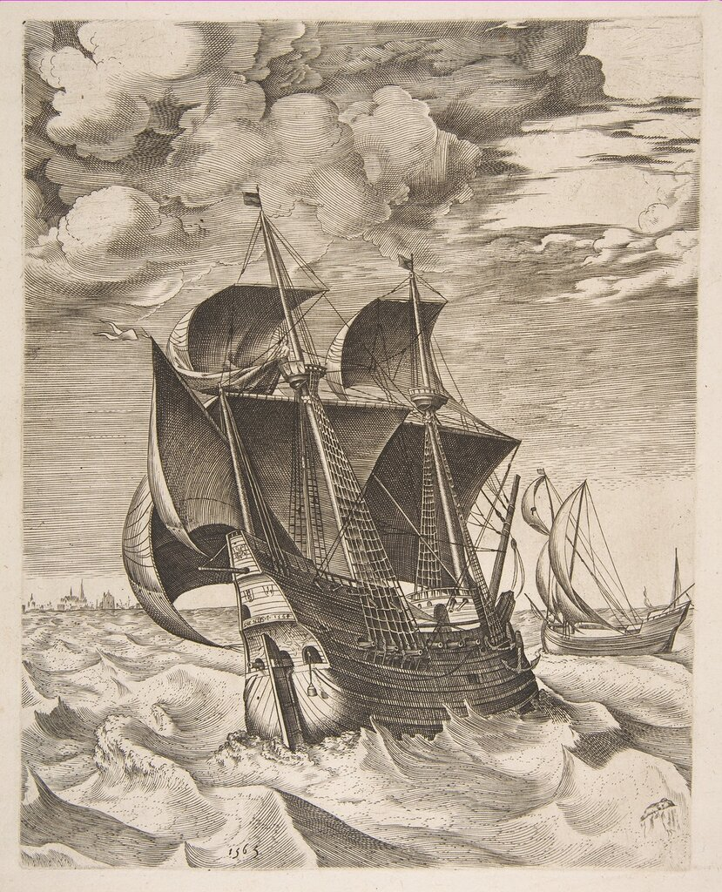

Приведенный в предыдущем рассказе отрывок из Пантеро Пантеры начинается, как мы помним, со сравнения формы марсилианы с формой урки (urcha; разговор о связи урки, гукера и холька у нас еще впереди):
Le vrche & le marsiliane sono l’vna & l'altra quasi d’vna istessa forma.
Капитан галер понтифика не был одинок в использовании такого сравнения. В итальянско-английском словаре Florio (World of Words , 1598) мы читаем:
Marciliana, a kind of hulke, pinnace, ship, barge or fire-boat.
Правда, в издании 1611 года этого же словаря формулировка меняется:
Marsiliána, a kind of ship or hulke

Питер Брюгель Старший. Голландский хольк и боер, гравюра, 1565.
Помимо одинаковой формы, которая отличала эти два корабля от навы того времени (корпуса их имели более тяжелый и полный – «как яблоко» – нос, который от мидель-шпангоута бысто сужался к корме), и урка (хольк) и марсилиана имели сходное парусное вооружение: они несли «семь парусов». На один из этих парусов – латинский парус на бизани – прямо указывает нам Пантеро Пантера. Каковы же были шесть оставшихся прямых парусов? Ясно, что два – это нижние паруса (фок и грот), два других – паруса второго яруса (фор- и грот-марсели). Пятым был скорее всего блинд, прямой парус под бушпритом. Что касается шестого прямого паруса, то установить, был ли это бомблинд или грот-брамсель, мы пока с увереностью не можем. Также нельзя предположить, что этим шестым парусом был крюйсель: к тому времени они, кажется, еще не появились.
Правда, с такой схемой не согласен Н.П. Боголюбов:
Марсильяны. Пантеро-Пантера, говоря о гуркахъ и марсильянахъ, приравниваетъ ихъ къ нефамъ и присовокупляетъ, что оба эти судна схожи между собою, но отличаются отъ нефовъ тѣмъ, что носовыя ихъ обводы круглые, а отъ средины къ кормѣ борта ихъ съуживаются. Они меньше нефовъ и гальоновъ и не носятъ больше 7 парусовъ, изъ которыхъ 6 четыреугольныхъ, а одинъ латинский и поднимаютъ грузу отъ 1500 до 2000 сальмъ и рѣдко больше. Изъ этого описанiя слѣдуетъ заключить, что гукоры и марсильяны были трехмачтовыя суда и что на бизань-мачтѣ былъ крюйсель и рейковая контръ-бизань.
Боголюбов Н.П. История корабля, том I (1879) с. 199-200
Мы, как видно из приведенного выше анализа парусной схемы марсилианы, исходили из того, что это был трехмачтовый корабль. Существовал и другой вариант – марсилиана с четырьмя мачтами. Он иногда упоминается в современной литературе. Но кажется, это заблуждение, и пошло оно от неправильного толкования текста Жоржа Гилле (Guillet de Saint-George, Georges, 1624-1705 ), который в своем известном словаре Les arts de l'homme d'épée, ou Le dictionnaire du gentilhomme (1678) уже не сравнивает марсилиану с хольком. Он просто пишет, что это было венецианское судно, которое совершало плавание по Адриатическому морю, заходя в Ионическое море не далее острова Закинф. Марсилиана, подобно пинку, имела квадратную корму и очень раздутый нос. Самые крупные марсилианы имели четыре мачты, менее крупные не имели бизани (artimon). Грузоподъемность самых больших судов достигала от 14 до 15 тысяч квинталей (700-750 тонн).
Marsiliane est un Bastiment vénitien , qui fait souvent la Traversée du Golphe Adriatique, jusqu’aux Zanthes. Il est bâty à pouppe quarrée, comme les Pinques, & a le devant fore gros. Les plus grandes Marsilianes ont quatre Mats, les petites n'ont point d'Artimon. Le Port des plus grandes est de quatorze à quinze mille Quintaux.
Но artimon – третья по счету мачта. И если менее крупные марсилианы не имели ее, то у более крупных она была, а следовательно, они имели три мачты. Четвертая, о которой говорит Гилле, была скорее всего бушпритом, который, таким образом, включали в общий счет мачт. Такой счет был механически перенесен в большинство словарей последующего периода.
Обсуждение этой темы продолжим в следующий раз.